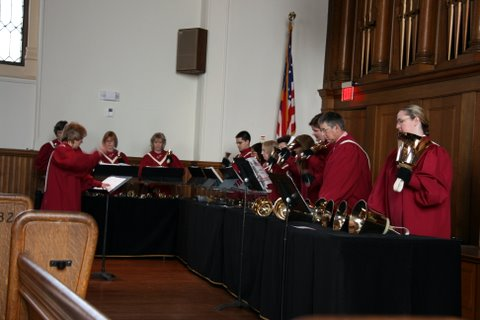
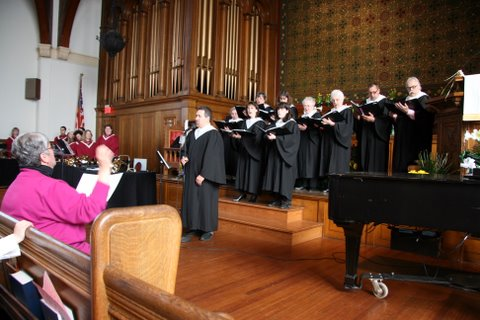

Bells Are Ringing Again
The Village Bell Ringers have begun rehearsal again, still on Tuesday evenings at 6:45 pm. The ringers are energized and inspired by all the classes and performances they participated in at the AGEHR Handbell Conference in Orono, Maine from June 25-28th. Many plans are in the making for this coming year....stay tuned for more information. Also, check the church web site for updates on bell performances and some new photos. Anyone wishing to check out the bell choir, thinking of trying it out or joining, should talk to Harriet Forman.
The Village Congregational Church has a very active program under the supervision of the Music Committee and Director of Music.
The Chancel Choir (The A Cappella Choir)
The Village Bell Ringers have begun rehearsal again, still on Tuesday evenings at 6:45 pm. The ringers are energized and inspired by all the classes and performances they participated in at the AGEHR Handbell Conference in Orono, Maine from June 25-28th. Many plans are in the making for this coming year....stay tuned for more information. Also, check the church web site for updates on bell performances and some new photos. Anyone wishing to check out the bell choir, thinking of trying it out or joining, should talk to Harriet Forman.
The Village Bell Ringers
Our resident hand bell choir, contribute to our worship service periodically and on special occasions. The Bell ringers are often called upon to play for other churches and organizations. Village Bell Ringers rehearse Tuesday evenings at 6:50pm.
The Devotional Bell Ringers
Our young person's hand bell choir. They perform for special events and worship services throughout the year. Devotional Bell Ringers rehearse Thursday afternoons at 4:00pm (during the school year).